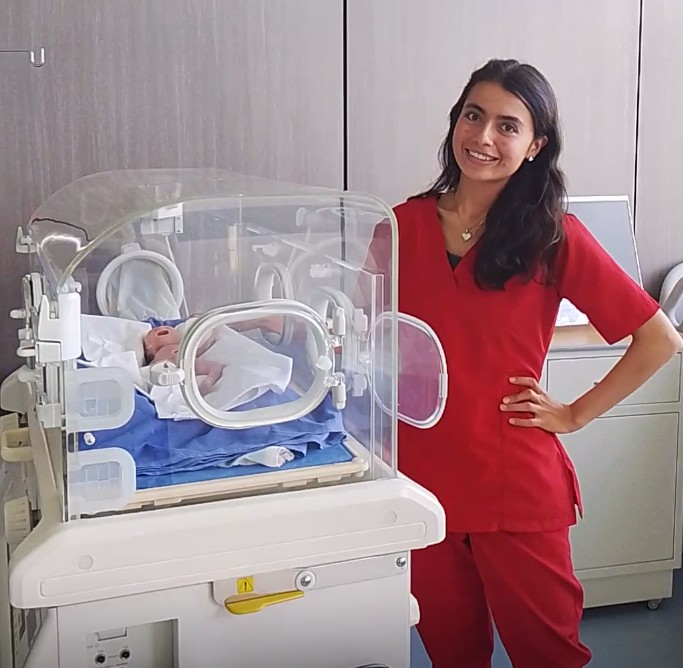

Valoración
EAD-3, AIMS y apoyo en evaluaciones TIMPSI.
Fisioterapeuta · Chía, Colombia

Acompaño procesos de movimiento y desarrollo con criterio clínico, sensibilidad y educación clara para las familias.
Experiencia académica en bebés prematuros, neurodesarrollo e investigación en primera infancia.
Perfil profesional
Fisioterapeuta proactiva y adaptable. Integra valoración, seguimiento motor, educación a cuidadores y análisis de información clínica.
EAD-3, AIMS y apoyo en evaluaciones TIMPSI.
Estimulación temprana y planes pediátricos supervisados.
Datos clínicos y proyectos de primera infancia.
Experiencia destacada
Seguimiento del neurodesarrollo de bebés prematuros y análisis clínico.
Rehabilitación, consulta externa, hospitalización y urgencias.
Atención pediátrica, educación a cuidadores y seguimiento domiciliario.
Enfoque profesional
Seguimiento motor, estimulación temprana y orientación a familias desde proyectos académicos y de investigación.
Interés en formarse para acompañar a mujeres gestantes y fortalecer la salud pélvica con preparación certificada.
Formación
Universidad de La Sabana · Tarjeta profesional en trámite.
Evidencias



Contacto